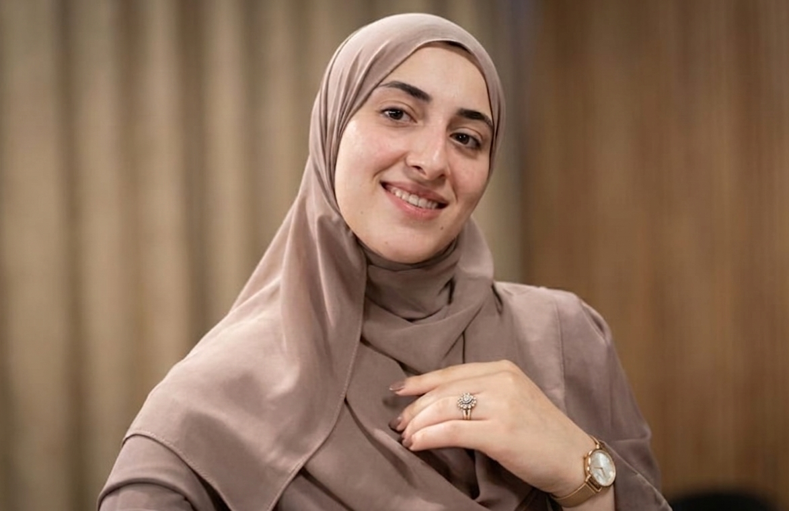

| السنة (Year) | الجامعة (University) | الدرجة العلمية (Degree) |
|---|---|---|
| 2022 | جامعة الأقصى (Al-Aqsa University) | بكالوريوس نظم المعلومات الإدارية (Bachelor in Management Information Systems) |
| 2026 | Coursera & ITC | شهادة في تصميم تجربة المستخدم والذكاء الاصطناعي (Certificates in UX Design & AI) |
March / 2026
تطوير تطبيقات جوال تفاعلية باستخدام Flutter وDart، وبناء واجهات ويب متكاملة ومتجاوبة باستخدام HTML5, CSS3, JavaScript, PHP, و MySQL.
September / 2025
تخطيط وتصميم النماذج الأولية للواجهات (Wireframes & Prototypes) لتطبيقات الجوال والمواقع باستخدام Figma وBalsamiq.
June / 2025
تصميم ومحاكاة المعمارية الشبكية باستخدام Cisco Packet Tracer، وإعداد الـ Routers والـ Multilayer Switches، وتطبيق تقنيات الـ VLANs وACLs لضمان حماية وتوجيه البيانات بكفاءة.
October / 2024
تحليل واستخراج النماذج من قواعد البيانات باستخدام أداة Orange Data Mining، وتطبيق خوارزميات التصنيف مثل Decision Trees و Naive Bayes.
يمكنك التواصل معي عبر الوسائل التالية: